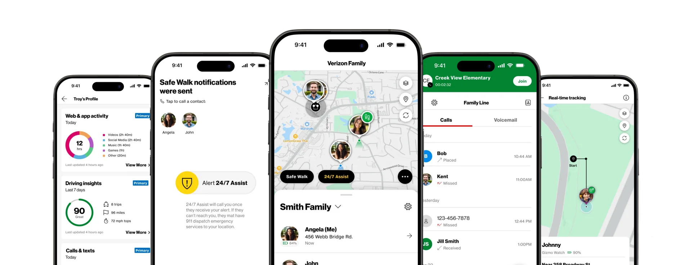

Verizon Family
Consolidating five legacy family products into one app, and turning NPS around by 20 points in a year.
The problem
Verizon's family products were spread across five separate apps: Smart Family, GizmoHub, Care Smart, Hum and Roadside. Each carried years of accumulated settings, nothing gave the household a shared picture, and third-party vendor latency slowed everything down. Sentiment showed it: Smart Family NPS hovered between −22 and −26, with Android as low as −31.
Key decisions
- Cut legacy features instead of porting them. Product managers and squad leads pushed hard for 1:1 feature parity to keep power users happy. I held the line on strict deprecation and backed it with rapid qualitative testing, which showed leadership that legacy setting clutter was the main source of user confusion and negative reviews. We sunset the low-value controls and simplified the core information architecture.
- Organize around family profiles, not devices. Location, place alerts, safety check-ins, group communication and driving insights all hang off a person, so the app still makes sense when a child changes phones or gets a watch.
- Set feature depth by age and role. Each capability surfaces at the depth that fits the member: tight controls for a young child, lighter check-ins and driving insights for a teen.
Outcome
Measured launch to launch over 12 months, overall NPS rose about 20 points to between −1 and +2, and iOS NPS climbed from −18 to as high as +10. Simpler onboarding and a cleaner daily experience drove the recovery, and new activations outpaced cancellations, so net churn turned negative across 950K+ subscriptions.
